coupled to a bus resonates when
coupled to a bus resonates when  ,
, Derivation (all-pass)
Coupler:
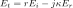
,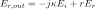
(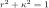
); round trip: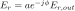
,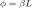
, = single-pass amplitude transmission. Eliminating:
= single-pass amplitude transmission. Eliminating:
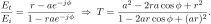
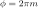
):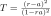
: zero for (critical coupling: coupling loss equals round-trip loss) (Yariv 2000).
(critical coupling: coupling loss equals round-trip loss) (Yariv 2000). 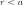
: over-coupled;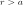
: under-coupled. Add–drop rings route resonant light to a second bus (Marcatili 1969).Picture
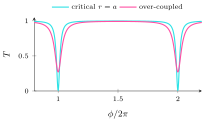
 of an all-pass ring resonator versus round-trip phase: it reaches zero at critical coupling () and gives broader, shallower dips when over-coupled.
of an all-pass ring resonator versus round-trip phase: it reaches zero at critical coupling () and gives broader, shallower dips when over-coupled.Worked example
Ring radius 10 µm (
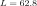
µm),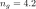
, loss 3 dB/cm →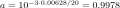
. FSR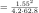
µm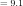
nm. Critically coupled (): FWHM 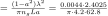
µm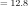
pm,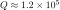
, photon lifetime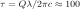
ps.Engineering applications
Compact modulators (ring modulators, small capacitance), WDM filters and multiplexers, biosensors (resonance shift ∝ analyte index), frequency combs in SiN microrings (Kerr solitons), photon-pair sources, Purcell enhancement (Purcell).
Pitfall
High Q means extreme sensitivity to temperature:
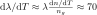
pm/K in Si, larger than the linewidth above — active thermal stabilisation is mandatory.